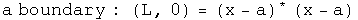

Topological Properties of Quaternions
I have not taken a topology class, so no doubt this particular section contains errors.
Mathematician are so much more precise than I will ever be.
Topological Space
If we choose to work systematically through Wald's "General Relativity", the starting point is "Appendix A, Topological Spaces". Roughly, topology is the structure of relationships that do not change if a space is distorted. Some of the results of topology are required to make calculus rigorous.
In this section, I will work consistently with the set of quaternions, H^1, or just H for short. The difference between the real numbers R and H is that H is not a totally ordered set and multiplication is not commutative. These differences are not important for basic topological properties, so statements and proofs involving H are often identical to those for R.
First an open ball of quaternions needs to be defined to set the stage for an open set. Define an open ball in H of radius (r, 0) centered around a point (y, Y) [note: small letters are scalars, capital letters are 3-vectors] consisting of points (x, X) such that

An open set in H is any set which can be expressed as a union of open balls.
[p. 423 translated] A quaternion topological space (H,T) consists of the set H
together with a collection T of subsets of H with these properties:
1.The union of an arbitrary collection of subsets, each in T, is in T
2.The intersection of a finite number of subsets of T is in T
3.The entire set H and the empty set are in T
T is the topology on H. The subsets of H in T are open sets. Quaternions form a topology because they are what mathematicians call a metric space, since q* q evaluates to a real positive number or equals zero only if q is zero. Note: this is not the meaning of metric used by physicists. For example, the Minkowski metric can be negative or zero even if a point is not zero. To keep the same word with two meanings distinct, I will refer to one as the topological metric, the other as an interval metric. These descriptive labels are not used in general since context usually determines which one is in play.
An important component to standard approaches to general relativity is product spaces. This is how a topology for Rn is created. Events in spacetime require R4, one place for time, three for space. Mathematicians get to make choices: what would change if work was done in R2, R3, or R5? The precision of this notion, together with the freedom to make choices, makes exploring these decisions fun (for those few who can understand what is going on :-)
By working with H, product spaces are unnecessary. Events in spacetime can be members of an open set in H. Time is the scalar, space the 3-vector. There is no choice to be made.
Open Sets
The edges of sets will be examined by defining boundaries, open and closed sets, and the interior and closure of a set.
I am a practical guy who likes pragmatic definitions. Let the real numbers L and U represent arbitrary lower and upper bounds respectively such that L < U. For the quaternion topological space (H, T), consider an arbitrary induced topology (A, t) where x and a are elements of A. Use inequalities to define:


The union of an arbitrary collection of open sets is open.
The intersection of a finite number of open sets is open.
The union of a finite number of closed sets is closed.
The intersection of an arbitrary number of closed sets is closed.
Clearly there are connections between the above definitions

This creates complementary ideas. [Wald, p.424]
The interior of A is the union of all open sets contained within A.
The interior equals A if and only if A is open.
The closure of A is the intersection of all closed sets containing A.
The closure of A equals A if and only if A is closed.
Define a point set as the set where the lower bound equals the upper bound. The only open set that is a point set is the null set. The closed point set is H. A point set for the real numbers has only one element which is identical to the boundary. A point set for quaternions has an infinite number of elements, one of them identical to the boundary.
What are the implications for physics?
With quaternions, the existence an open set of events has nothing to do with the causality of that collection of events.


A proper time can have exactly the same absolute value as a pure spacelike separation, so these two will be included in the same sets, whether open, closed or on a boundary.
There is no correlation the reverse way either. Take for example a collection of lightlike events. Even though they all share exactly the same interval - namely zero - their absolute value can vary all over the map, not staying within limits.
Although independent, these two ideas can be combined synergistically. Consider an open set S of timelike intervals.
The set S could depict a classical world history since they are causally linked and have good topological properties. A closed set of lightlike events could be a focus of quantum electrodynamics. Topology plus causality could be the key for subdividing different regions of physics.
Hausdorff Topology
This property is used to analyze compactness, something vital for rigorously establishing differentiation and integration.
[Wald p424] The quaternion topological space (H, T) is Hausdorff because for each pair of distinct points a, b E H, a not equal to b, one can find open sets Oa, Ob E T such that a E Oa, b I Ob and the intersection of Oa and Ob is the null set.
For example, find the half-way point between a and b. Let that be the radius of an open ball around the points a and b:

Neither set quite reaches the other, so their intersection is null.
Compact Sets
In this section, I will begin an investigation of compact sets of quaternions. I hope to share some of my insights into this subtle but significant topic.
First we need the definition of a compact set of quaternions.
[Translation of Wald p. 424] Let A be a subset of the quaternions H. Set A could be opened, closed or neither. An open cover of A is the union of open sets {Oa} that contains A. A union of open sets is open and could have an infinite number of members. A subset of {Oa} that still covers A is called a subcover. If the subcover has a finite number of elements it is called a finite subcover. The set A subset of H is compact if every open cover of A has a finite subcover.
Let's find an example of a compact set of quaternions. Consider a set S composed of points with a finite number of absolute values:

The set S has an infinite number of members, since for any of the equalities, specifying the absolute value still leaves three degrees of freedom (if the domain had been x E R, then S would have had a finite number of elements). The set S can be covered by an open set {O} which could have an infinite number of members. There exists a subset {C} of {O} that is finite and still covers S. The subset {C} would have one member for each absolute value.

Every set of quaternions composed of a finite number of absolute values like the set S is compact.
Notice that the set S is closed because it consists of a boundary without an interior. The link between compact, closed and bound set is important, and will be examined next
A compact set is a statement about the ability to find a finite number of open sets that cover a set, given any open cover. A closed set is the interior of a set plus the boundary of that set. A set is bound if there exists a real number M such that the distance between a point and any member of the set is less than M.
For quaternions with the standard topology, in order to have a finite number of open sets that cover the set, the set must necessarily include its boundary and be bound. In other words, to be compact is to be closed and bound, to be closed and bound is to be compact.
[Wald p. 425] Theorem 1 (Heine-Borel). A closed interval of quaternions S:

with the standard topology on H is compact.
Wald does not provide a proof since it appears in many books on analysis. Invariably the Heine-Borel Theorem employs the domain of the real numbers, x E R. However, nothing in that proof changes by using quaternions as the domain.
[Wald p. 425] Theorem 2. Let the topology (H, T) be Hausdorff and let the set A subset of H be compact. Then A is closed.
Theorem 3. Let the topology (H, T) be compact and let the set A subset of H be closed. Then A is compact.
Combine these theorems to create a stronger statement on the compactness of subsets of quaternions H.
Theorem 4. A subset A of quaternions is compact if and only if it is closed and bounded.
The property of compactness is easily proved to be preserved under continuous maps.
Theorem 5. Let (H, T) and (H', T') be topological spaces. Suppose (H, T) is compact and the function f: H -> H' is continuous. The f[H] = {h' E H' | h' = f(h)} is compact. This creates a corollary by theorem 4.
Theorem 6. A continuous function from a compact topological space into H is bound and its absolute value attains a maximum and minimum values.
[end translation of Wald]
R1 versus Rn
It is important to note that these theorems for quaternions are build directly on top of theorems for real numbers, R1. Only the domain needs to be changed to H1. Wald continues with theorems on product spaces, specifically Tychonoff's Theorem, so that the above theorems can be extended to Rn. In particular, the product space R4 should have the same topology as the quaternions.
Hopefully, subtlety matters in the discussion of the logical foundations of general relativity. Both R1 and H1 have a rule for multiplication, but H1 has an antisymmetric component. This is a description of a difference. R4 does not come equipped with a rule for multiplication, so it is qualitatively different, even if topologically similar to the quaternions.